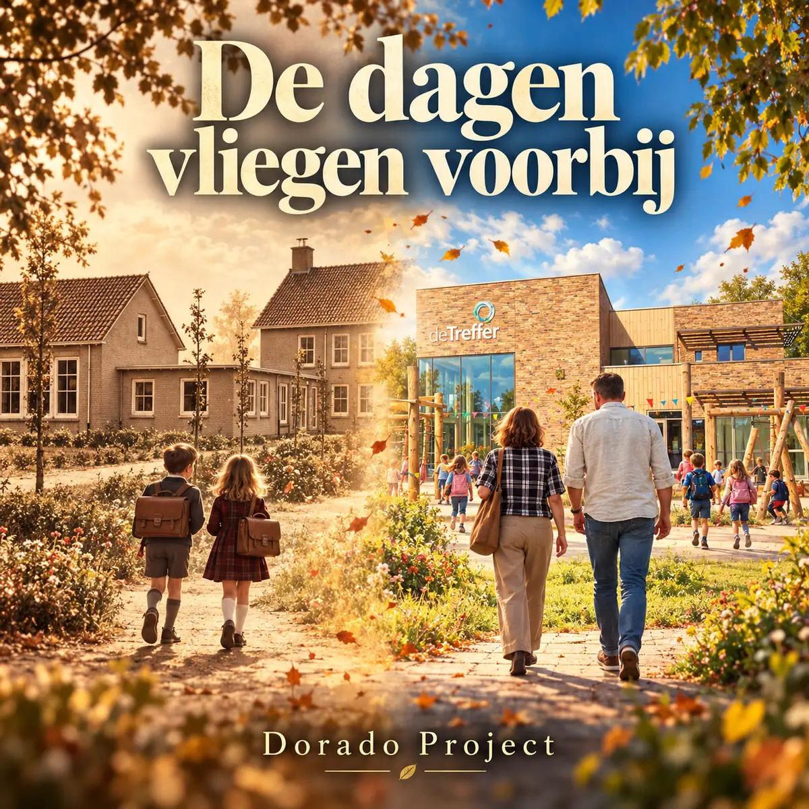

SINGLE · NEDERLANDSTALIGE MEEZINGER
De dagen vliegen voorbij
Pop / Folk
Een vrolijke Nederlandstalige popmeezinger ter ere van veertig jaar meester Marinus en juf Nynke in Gorredijk. Het nummer vertelt over hun tijd als klasgenoten op De Trimbeets, hun plezier op De Treffer en het belangrijkste van hun werk: ieder kind laten voelen dat het erbij hoort. Gitaar, piano en een feestelijk meezingrefrein brengen toen en nu samen.
Luister op Spotify →